『 Spark 』6. 深入研究 spark 运行原理之 job, stage, task
2016-03-18
写在前面
本系列是综合了自己在学习spark过程中的理解记录 ＋ 对参考文章中的一些理解 ＋ 个人实践spark过程中的一些心得而来。写这样一个系列仅仅是为了梳理个人学习spark的笔记记录，所以一切以能够理解为主，没有必要的细节就不会记录了，而且文中有时候会出现英文原版文档，只要不影响理解，都不翻译了。若想深入了解，最好阅读参考文章和官方文档。
其次，本系列是基于目前最新的 spark 1.6.0 系列开始的，spark 目前的更新速度很快，记录一下版本号还是必要的。
最后，如果各位觉得内容有误，欢迎留言备注，所有留言 24 小时内必定回复，非常感谢。
Tips: 如果插图看起来不明显，可以：1. 放大网页；2. 新标签中打开图片，查看原图哦；3. 点击右边目录上方的 present mode 哦。
1. spark 运行原理
这一节是本文的核心，我们可以先抛出一个问题，如果看完这一节，或者这一章之后，你能理解你的整个 spark 应用的执行流程，那就可以关掉这个网页了［对了，关掉网页之前记得分享一下哦，哈哈］
Problem: How does user program get translated into units of physical execution ?
我们用一个例子来说明，结合例子和运行截图来理解。
1.1 例子，美国 1880 － 2014 年新生婴儿数据统计
目标：用美国 1880 － 2014 年新生婴儿的数据来做做简单的统计数据源： https://catalog.data.gov数据格式：- 每年的新生婴儿数据在一个文件里面
- 每个文件的每一条数据格式：
姓名,性别,新生人数
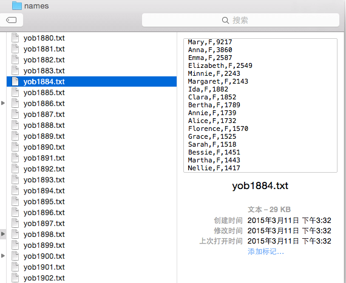
代码和结果展示
### packages
import pandas as pd
### spark UDF (User Defined Functions)
def map_extract(element):
file_path, content = element
year = file_path[-8:-4]
return [(year, i) for i in content.split("\r\n") if i]
### spark logic
res = sc.wholeTextFiles('hdfs://10.21.208.21:8020/user/mercury/names',
minPartitions=40) \
.map(map_extract) \
.flatMap(lambda x: x) \
.map(lambda x: (x[0], int(x[1].split(',')[2]))) \
.reduceByKey(operator.add) \
.collect()
### result displaying
data = pd.DataFrame.from_records(res, columns=['year', 'birth'])\
.sort(columns=['year'], ascending=True)
ax = data.plot(x=['year'], y=['birth'],
figsize=(20, 6),
title='US Baby Birth Data from 1897 to 2014',
linewidth=3)
ax.set_axis_bgcolor('white')
ax.grid(color='gray', alpha=0.2, axis='y')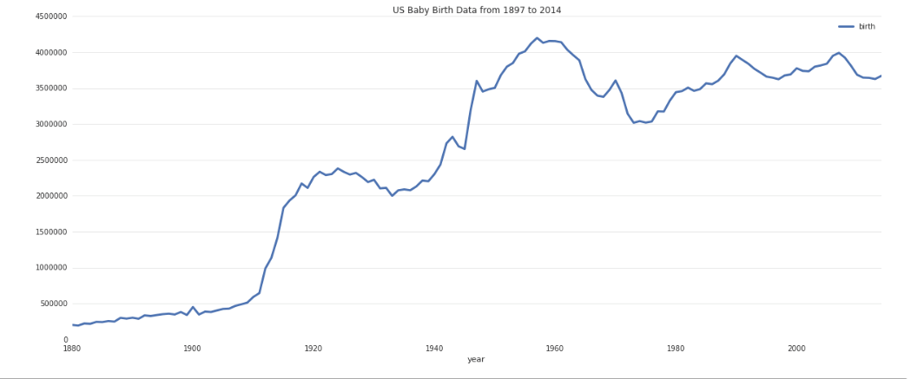
1.2 运行流程概览
还记得我们在 『 Spark 』3. spark 编程模式 讲到的构建一个 spark application 的过程吗：
- 加载数据集
- 处理数据
- 结果展示
上面的 22 行代码，就已经把构建一个 spark app 的三大步骤完成了，amazing, right? 今天我们主要讲 spark 的运行逻辑，所以我们就以核心的 11 － 16 ，这六行代码来作为今天的主线，了解了解 spark 的原理。
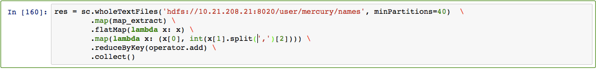
可以看到，整个逻辑实际上就用了 sparkContext 的一个函数，rdd 的 3 个 transformation 和 1 个 action。
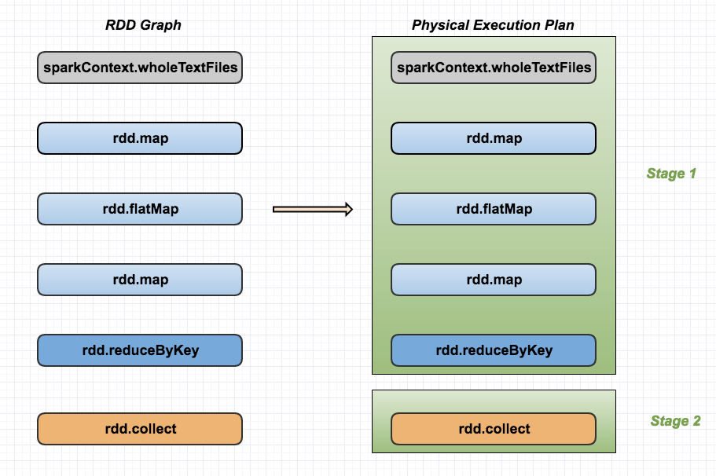
现在让我们从 WEB UI 上来看看，当我们运行这段代码的时候，后台都发生了什么。 可以看到，执行这段代码的时候，spark 通过分析，优化代码，知道这段代码需要一个 job 来完成，所以 web ui 上只有一个 job。值得深究的是，这个 job 由两个 stage 完成，这两个 state 一共有 66 个 task。
所以，这里我们就再次理解下 spark 里，job，stage，task 的概念：
- job : A job is triggered by an action, like count() or saveAsTextFile(). Click on a job to see information about the stages of tasks inside it. 理解了吗，所谓一个 job，就是由一个 rdd 的 action 触发的动作，可以简单的理解为，当你需要执行一个 rdd 的 action 的时候，会生成一个 job。
- stage : stage 是一个 job 的组成单位，就是说，一个 job 会被切分成 1 个或 1 个以上的 stage，然后各个 stage 会按照执行顺序依次执行。至于 job 根据什么标准来切分 stage，可以回顾第二篇博文：『 Spark 』2. spark 基本概念解析
- task : A unit of work within a stage, corresponding to one RDD partition。即 stage 下的一个任务执行单元，一般来说，一个 rdd 有多少个 partition，就会有多少个 task，因为每一个 task 只是处理一个 partition 上的数据。从 web ui 截图上我们可以看到，这个 job 一共有 2 个 stage，66 个 task，平均下来每个 stage 有 33 个 task，相当于每个 stage 的数据都有 33 个 partition [注意：这里是平均下来的哦，并不都是每个 stage 有 33 个 task，有时候也会有一个 stage 多，另外一个 stage 少的情况，就看你有没有在不同的 stage 进行 repartition 类似的操作了。]
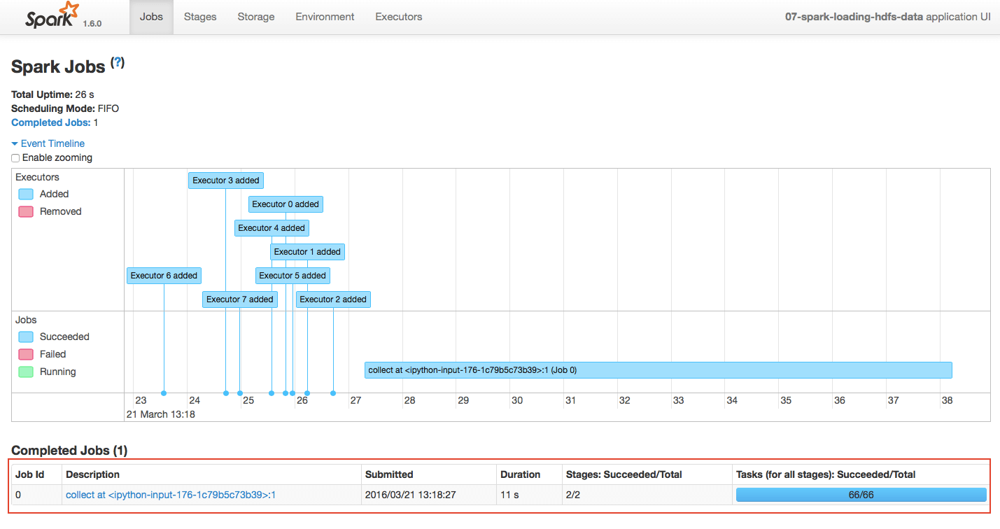
1.3 运行流程之 : job
根据上面的截图和再次重温，我们知道这个 spark 应用里只有一个 job，那就是因为我们执行了一个 collect 操作，即把处理后的数据全部返回到我们的 driver 上，进行后续的画图，返回的数据如下图：
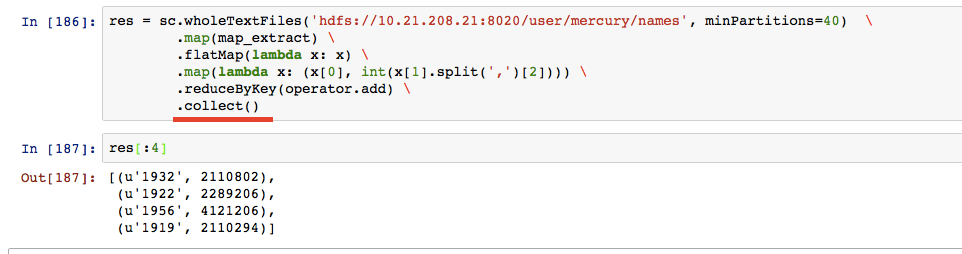
1.4 运行流程之 : stage
我们这个 spark 应用，生成了一个 job，这个 job 由 2 个 stage 组成，并且每个 stage 都有 33 个task，说明每个 stage 的数据都在 33 个 partition 上，这下我们就来看看，这两个 stage 的情况。
首先，我们先看看为什么这里会有两个 stage，根据 『 Spark 』2. spark 基本概念解析 中对 stage 的描述，目前有两个划分 stage 的标准：
- 当触发 rdd 的 action 时 : 在我们的应用中就是最后的
collect操作，关于这个操作的说明，可以看官方文档: rdd.collect - 当触发 rdd 的 shuffle 操作时 : 在我们的应用中就是
reduceByKey这个操作，官方文档: rdd.reduceByKey
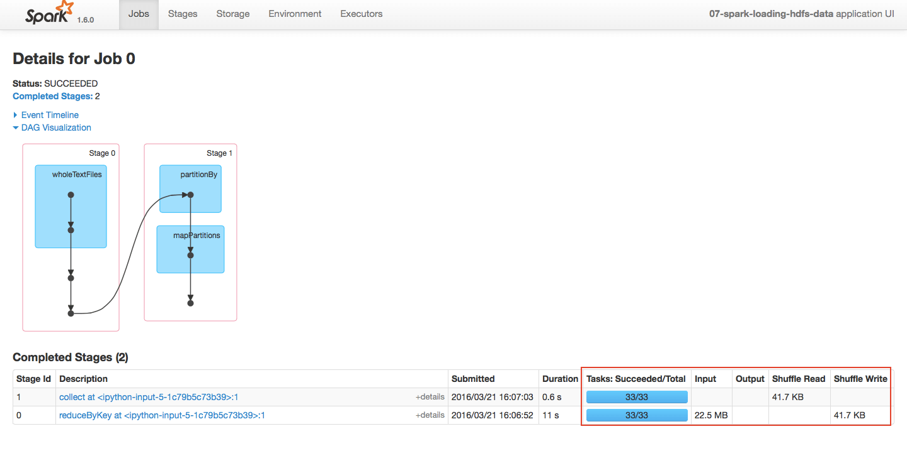
再次回顾上面那张图：
这下应该就明了了，关于两个 stage 的情况：
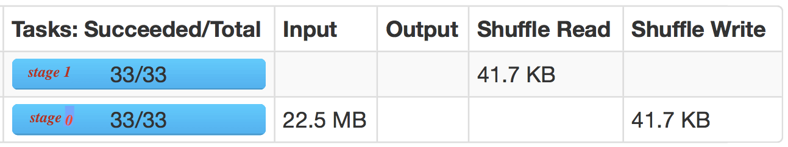
-
第一个 stage，即截图中 stage id 为 0 的 stage，其执行了
sc.wholeTextFiles().map().flatMap().map().reduceByKey()这几个步骤，因为这是一个Shuffle操作，所以后面会有Shuffle Read和Shuffle Write。具体来说，就是在 stage 0 这个 stage 中，发生了一个 Shuffle 操作，这个操作读入 22.5 MB 的数据，生成 41.7 KB 的数据，并把生成的数据写在了硬盘上。 -
第二个 stage，即截图中 stage id 为 1 到 stage，其执行了
collect()这个操作，因为这是一个action操作，并且它上一步是一个 Shuffle 操作，且没有后续操作，所以这里collect()这个操作被独立成一个 stage 了。这里它把上一个 Shuffle 写下的数据读取进来，然后一起返回到 driver 端，所以这里可以看到他的Shuffle Read这里刚好读取了上一个 stage 写下的数据。
1.5 运行流程之 : task
其实到这里应该都理解得差不多了，至于为什么每个 stage 会有 33 个 task [即我们的数据文件存放到 33 个partition 上，可是明明 sc.wholeTextFiles('hdfs://10.21.208.21:8020/user/mercury/names', minPartitions=40) 这里指定了最小要 40 个partition 到啊]，这个问题我们留到以后说，在后面我们会有一篇讲怎么调试，优化 spark app 的博文，到时候我们会继续回到这里，解答这里的问题。
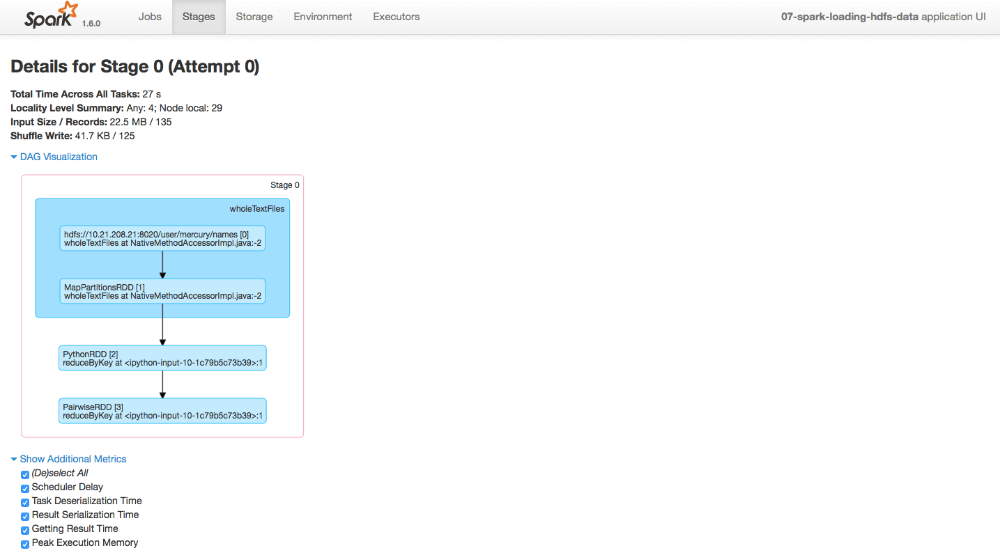 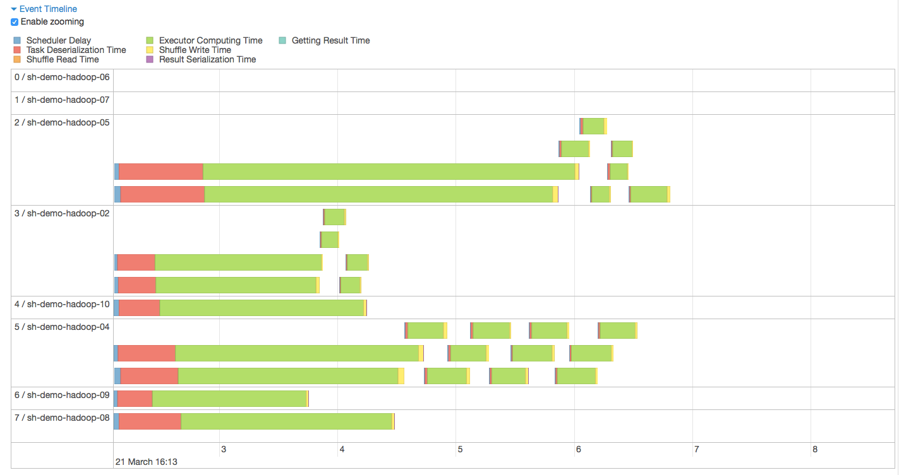 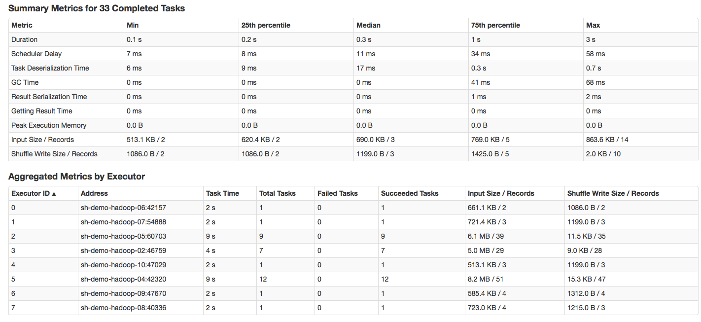 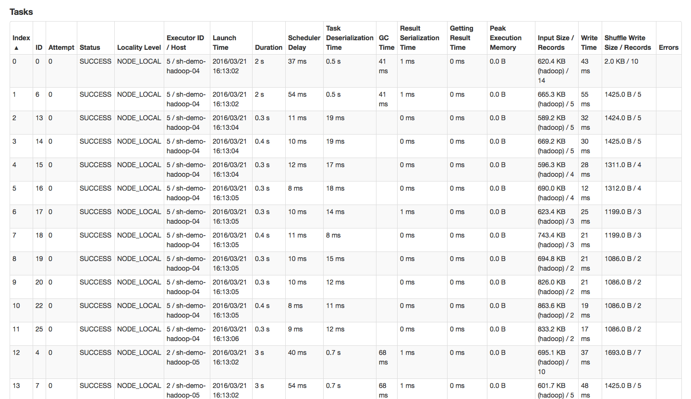 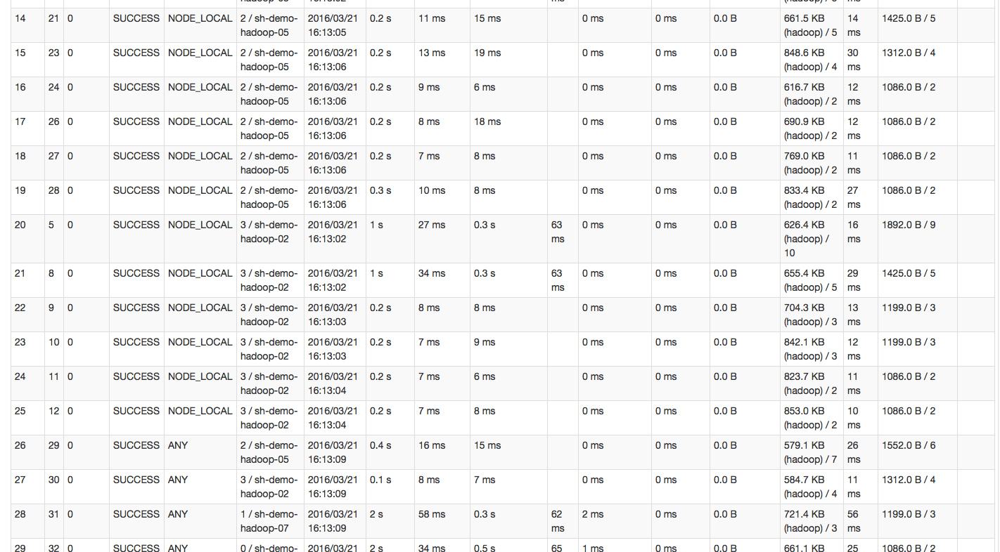 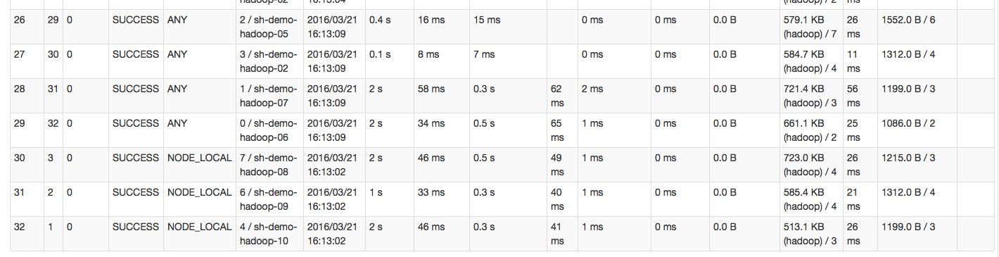
2. Next
既然我们都慢慢开始深入理解 spark 的执行原理了，那下次我们就来说说 spark 的一些配置吧，然后再说说 spark 应用的优化。
7. 打开微信，扫一扫，点一点，棒棒的，^_^

参考文章
本系列文章链接
- 『 Spark 』1. spark 简介
- 『 Spark 』2. spark 基本概念解析
- 『 Spark 』3. spark 编程模式
- 『 Spark 』4. spark 之 RDD
- 『 Spark 』5. 这些年，你不能错过的 spark 学习资源
- 『 Spark 』6. 深入研究 spark 运行原理之 job, stage, task
- 『 Spark 』7. 使用 Spark DataFrame 进行大数据分析
- 『 Spark 』8. 实战案例 ｜ Spark 在金融领域的应用 ｜ 日内走势预测
- 『 Spark 』9. 搭建 IPython + Notebook + Spark 开发环境
- 『 Spark 』10. spark 应用程序性能优化｜12 个优化方法
- 『 Spark 』11. spark 机器学习
- 『 Spark 』12. Spark 2.0 特性介绍
- 『 Spark 』13. Spark 2.0 Release Notes 中文版
- 『 Spark 』14. 一次 Spark SQL 性能优化之旅